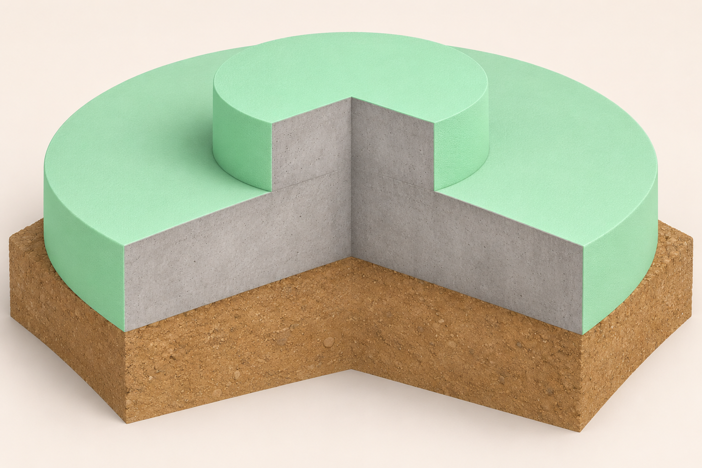
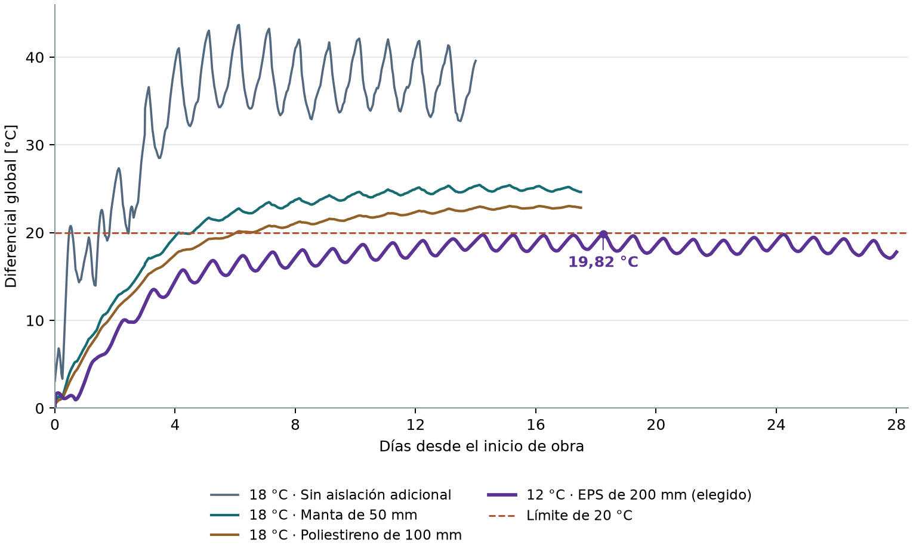
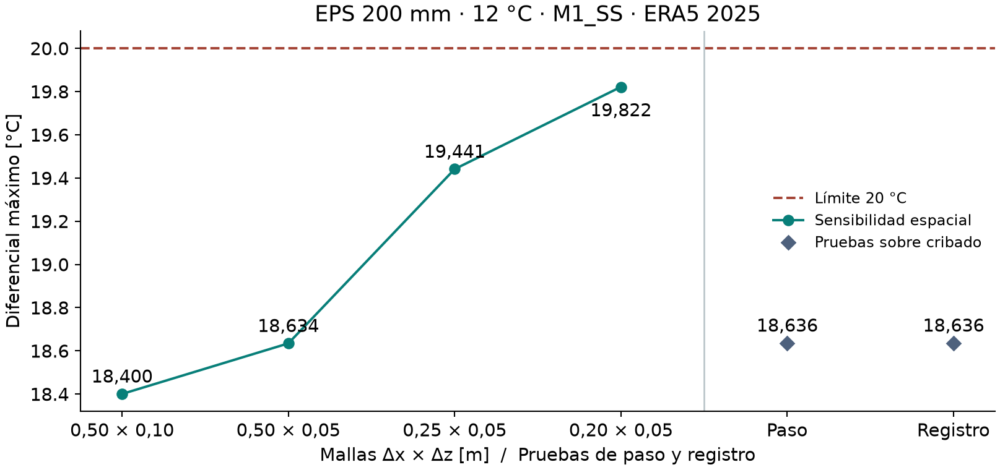

Volumen y duración
La suma sin redondear es 636,775 m³. A 40 m³/h, la colocación continua toma 15,92 h.
DEFENSA FINAL · P02 MCOC
EPS de 200 mm + hormigón fresco a 12 °C
Candidato elegido para la defensa. Cumplió los límites térmicos en los seis escenarios de malla fina con activación conjunta. El margen sigue siendo sensible a la malla.
Ver la corrida crítica
El preenfriamiento baja la temperatura de partida del hormigón fresco. El EPS (poliestireno expandido) hace que la superficie se enfríe más despacio. Juntos buscan mantener la temperatura máxima bajo control y reducir la diferencia entre el interior y la superficie.
ALTERNATIVAS
Dos curvas de hidratación M1 × tres historias climáticas ERA5. Una corrida excede si su temperatura máxima supera 70 °C o su diferencial supera 20 °C.
M1 es el nombre de la mezcla de hormigón. SS es la etiqueta del ensayo del 13 al 20 de abril de 2025. 22A identifica el ensayo del 22 de abril. De cada ensayo salió una estimación de cuánto calor genera M1 al endurecerse. La curva SS estimó más calor acumulado.
ERA5 aporta tres historias de tiempo meteorológico, de 2023, 2024 y 2025. Al combinar ambas curvas de calor con los tres años de clima salen seis escenarios por plan.
Un caso define cómo se coloca y protege el hormigón. Un escenario combina una curva de calor con un clima. Una corrida calcula ese caso y escenario con un nivel de simulación específico.
Duración es el tiempo de colocación. Horizonte es el tiempo total simulado para observar cómo evoluciona la temperatura. Un horizonte abierto indica que todavía podría aparecer un pico posterior.
El riesgo conjunto suma los pesos de las corridas que exceden 70 °C de temperatura máxima o 20 °C de diferencial, contando cada corrida una sola vez. El objetivo del estudio fue un riesgo de hasta 5 %. Un guion indica que falta una matriz completa para calcular ese porcentaje.
En activación conjunta el modelo inicia térmicamente los cinco tramos al mismo tiempo. En activación sucesiva cada tramo empieza cuando se coloca según el cronograma.
Pulsa el nombre de un caso para ver sus escenarios en la tabla inferior.
| Caso | Duración | T máx. | Peor Δ | Riesgo conjunto | Resultado |
|---|
| Curva | Clima | T máx. | Δ máx. | Horizonte | Resultado | Curvas |
|---|
RESULTADOS TÉRMICOS
El diferencial resta la mínima cercana a la superficie de la máxima del hormigón activo al mismo instante.
Mueve el deslizador o el puntero sobre el gráfico para leer los tres valores a la misma hora. Por ejemplo, 50 °C en la zona más caliente y 31 °C cerca de la superficie dan un diferencial de 19 °C.
EVIDENCIA VISUAL
Abre las figuras para verlas a tamaño completo.






SUPUESTOS Y VERIFICACIÓN
La activación sucesiva del candidato se comprobó en barrido. La verificación a 0,20 m cubre solo la fila M1 SS / ERA5 2025.
La suma sin redondear es 636,775 m³. A 40 m³/h, la colocación continua toma 15,92 h.
El cálculo usa el caudal, la densidad, el calor específico y la reducción de temperatura. La potencia eléctrica dependerá del equipo y las pérdidas.
El sensor del núcleo sigue el calentamiento interno y el de la superficie sigue el enfriamiento exterior. Al restar lecturas tomadas a la misma hora se obtiene el diferencial medido en esa sección. Es una propuesta de monitoreo para contrastar la evolución prevista por el modelo.